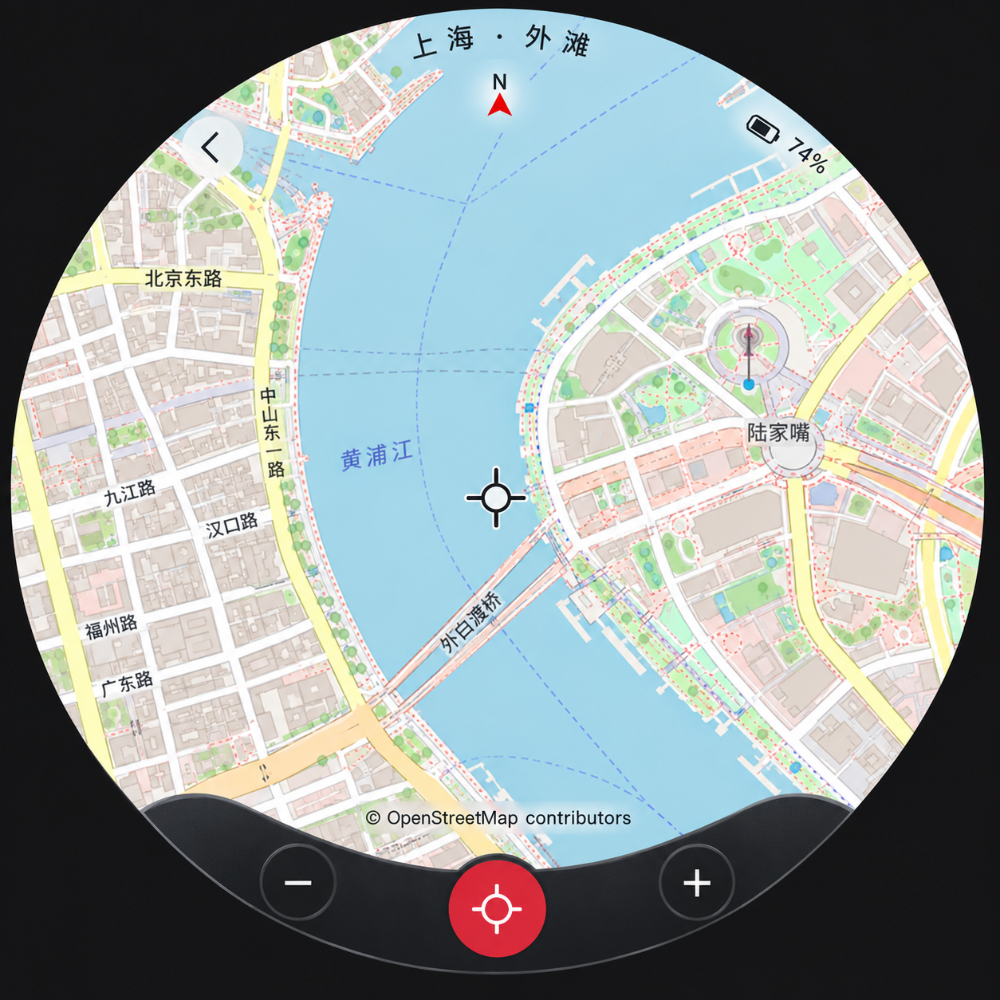
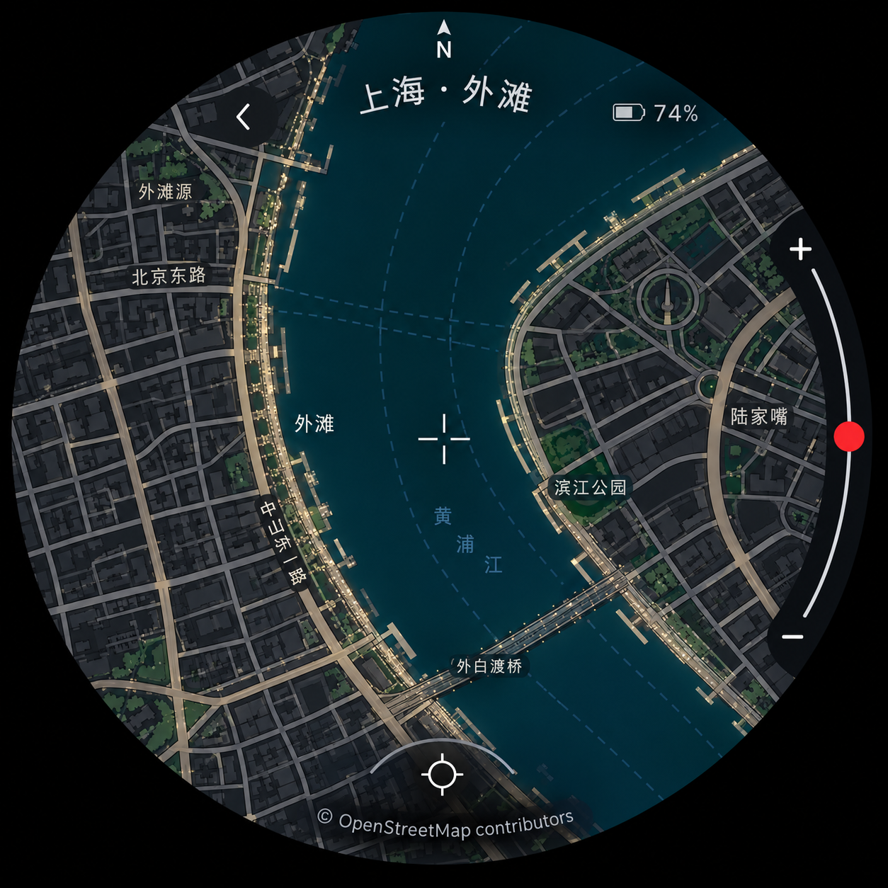
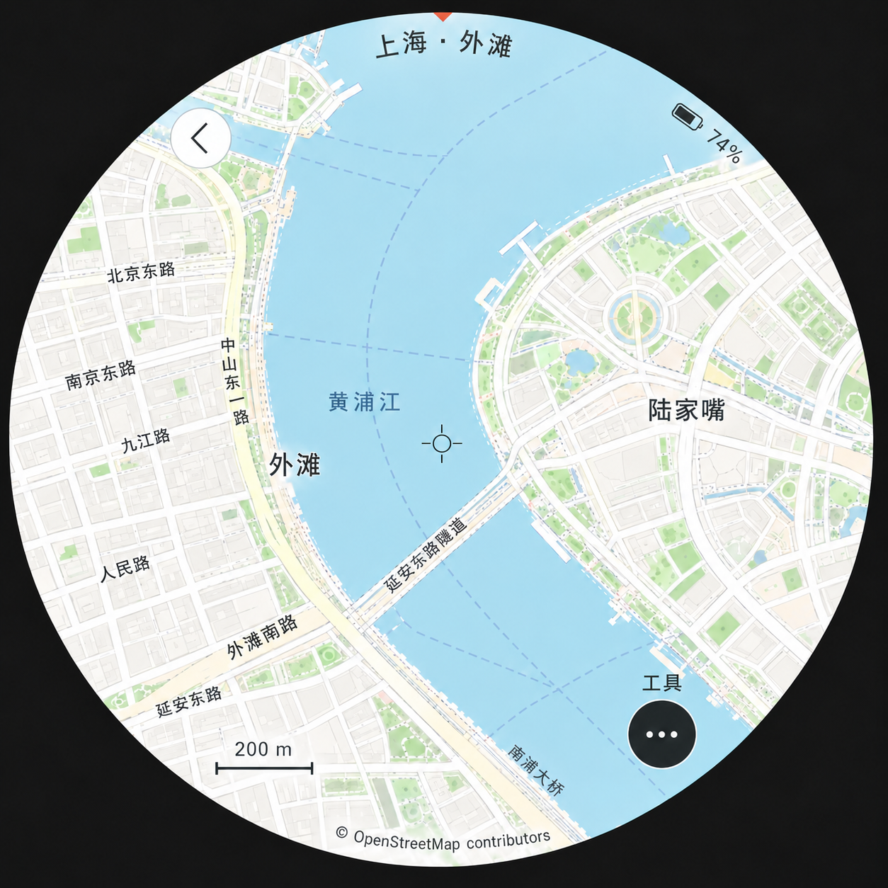

<!doctype html><html lang="zh-CN"><meta charset="utf-8"><meta name="viewport" content="width=1080"><title>备选-地图概念</title><link rel="stylesheet" href="style.css">
    <main class="poster map-page" data-number="17"><header><div class="brand">soRound OS <span>明天 · 正式版见</span></div><div class="kicker">备选素材 / 随身地图视觉探索</div><h1>下一张风景，<br>想装进圆里。</h1><p class="sub">月牙操作带、圆弧缩放、轻量工具入口，三种圆屏想象。</p></header><div class="content"><div class="map-main"><figure class=""><figcaption>月牙操作带</figcaption></figure></div><div class="duo map-duo"><figure class=""><figcaption>圆弧缩放</figcaption></figure><figure class=""><figcaption>轻量工具入口</figcaption></figure></div></div><footer><span>AI 视觉概念 · 地理细节非真实输出 · 不列入明日功能承诺</span><span>17 / 10.23</span></footer></main></html>